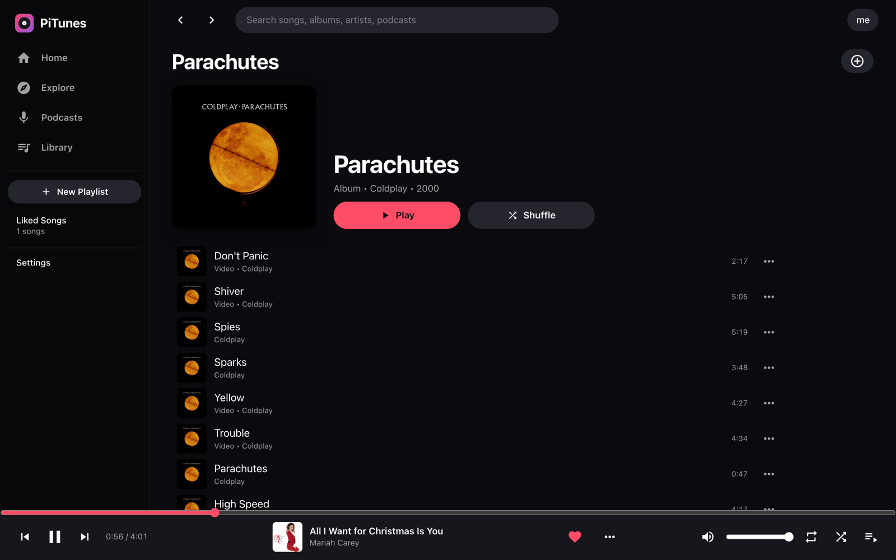
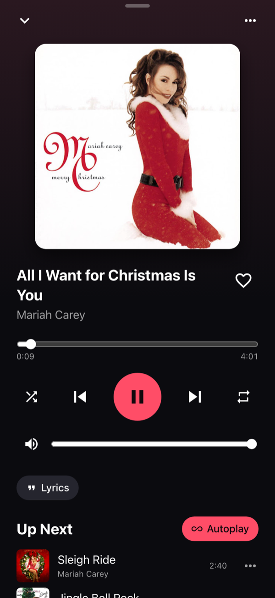
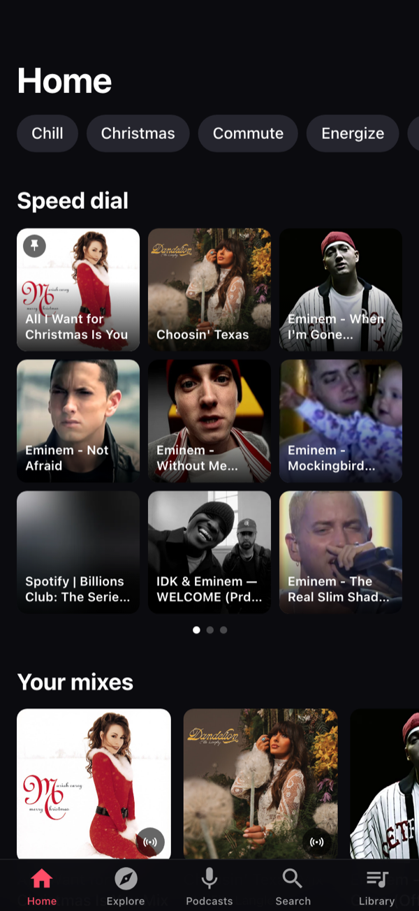
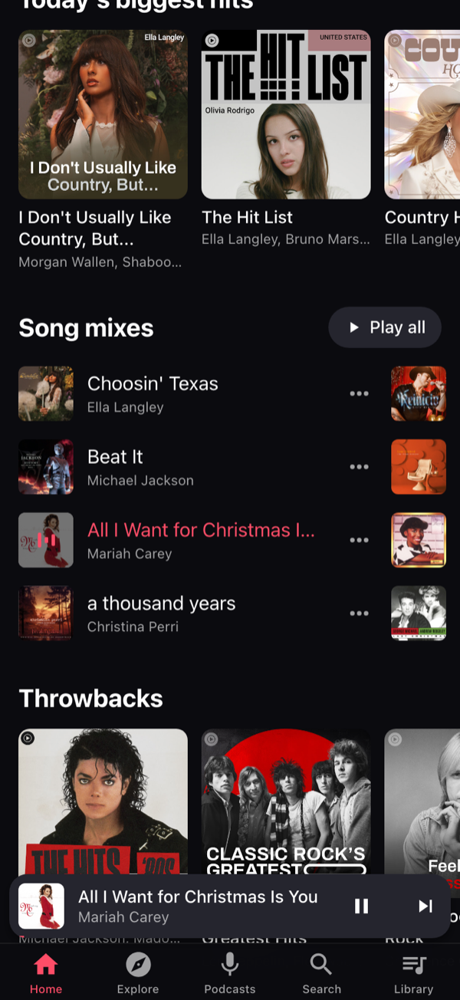
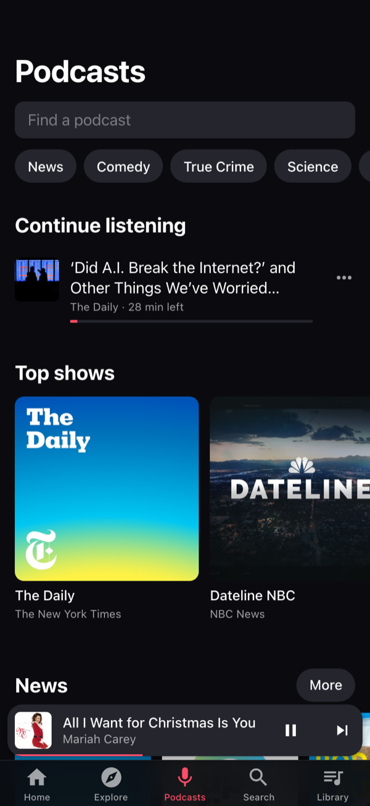
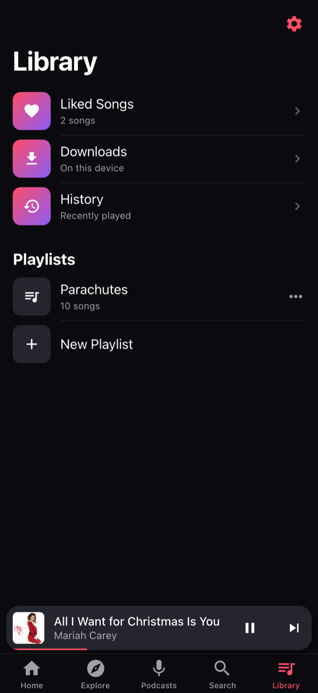
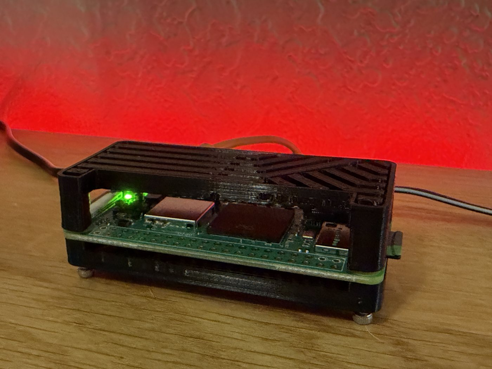

Free and open source
Your own music player, running on a Raspberry Pi at home.
PiTunes is an ad-free music and podcast player that you host yourself. A small server runs on a Raspberry Pi in your house. You open it in a browser on your phone, tablet or laptop, add it to your home screen, and it works like an app, at home or anywhere else.
No subscription. No account with us. No Google login. Nothing in the cloud.






Why I built this
I was on a YouTube Premium family plan that I shared with friends. Then YouTube removed us from it, because we do not live in the same household. I looked at what it would cost to sign up on my own: about $15 a month for music, or a little over $20 for Premium.
The thing is, music is the only reason I use YouTube. I do not care much about ads on videos. So I asked a different question: could I build a player where I pay for the hardware once and never pay a subscription again?
I had a Raspberry Pi Zero 2 W, a computer the size of a stick of gum that costs about as much as one month of that subscription. PiTunes is what came out of it: a server small enough for the cheapest Pi, and an app that feels like a normal music app on every device I own.

My PiTunes server: a Pi Zero 2 W in a 3D-printed case. It sits on a shelf at home.
This page explains how it works and walks through the whole setup, so you can copy it. If you can follow instructions and paste a few commands, you can build it. You do not need to have used a Raspberry Pi before.
How it works
There are three parts, and each one does a single job.
- The Raspberry Pi runs the PiTunes server. It searches, finds the audio for a song, passes it on to your device, and keeps a copy of recently played songs so they start instantly next time. It also stores your likes, playlists and history. All of that stays on the Pi.
- Tailscale is a free private network that connects your own devices to each other. It lets your devices reach the Pi from anywhere without opening your home router to the internet. The server only listens on Tailscale, so nobody outside your network can see it.
- The app is a web app that the Pi itself serves. You open the Pi's address in a browser and add it to your home screen. It plays in the background, shows on the lock screen with play, pause and skip, and can download songs for offline use. On a laptop the same address gives you a full desktop layout.
Music is fetched from YouTube without signing in. Podcasts come straight from each show's public feed.
What you need
| Item | Notes |
|---|---|
| Raspberry Pi | A Raspberry Pi Zero 2 W is enough, and it is what this was built and measured on. Any newer or larger Pi also works. |
| microSD card | 16 GB or more. The server keeps up to 4 GB of recently played songs by default. |
| Power supply | The official supply for your Pi model, or a good 5 V USB adapter. |
| Tailscale account | Free for personal use. You sign in with a Google, Apple, Microsoft or GitHub account. |
| Something to listen on | Any phone, tablet or computer with a current browser: iPhone, Android, iPad, Mac, Windows or Linux. |
| A computer | Only for the setup: to write the SD card and to type a few commands. Mac, Windows or Linux. |
A case is optional. Mine is 3D printed.
The build guide
Five steps. Plan for about an hour, most of it waiting for things to install.
Put Raspberry Pi OS on the SD card
The Pi needs an operating system, and it reads it from the SD card. Raspberry Pi Imager is the official tool that writes it for you and lets you set up Wi-Fi in advance, so the Pi never needs a screen or keyboard.
- Install Raspberry Pi Imager on your computer and put the SD card in.
- Choose your Pi model, then choose Raspberry Pi OS (other) and Raspberry Pi OS Lite (64-bit). "Lite" has no desktop, which leaves more memory for the server.
- When Imager asks whether to customise the settings, say yes and fill in:
- Hostname:
music. This becomes the Pi's name on your network and part of your player's address. - Username and password: pick your own. You will use them once or twice to log in.
- Wi-Fi: your home network's name and password. A Pi Zero 2 W only connects to 2.4 GHz Wi-Fi.
- Enable SSH with password login. SSH is how you type commands on the Pi from your computer.
- Hostname:
- Write the card, put it in the Pi and plug in the power. The first start takes a few minutes.
Now log in from your computer. Open Terminal (Mac or Linux) or PowerShell (Windows) and type this, with your own username in place of you:
ssh you@music.localAnswer yes to the question about trusting the host, then type the password you chose. If music.local is not found, wait two more minutes and try again, or look up the Pi's IP address in your router's list of devices and use that instead of music.local.
Install Tailscale
Tailscale gives the Pi and your devices a private connection to each other that works from anywhere. Without it, the app would only work on your home Wi-Fi.
On the Pi, in the SSH session from step 1, run:
curl -fsSL https://tailscale.com/install.sh | sh
sudo tailscale upThe second command prints a link. Open it in a browser and sign in. That creates your private network (Tailscale calls it a tailnet) with the Pi as its first device.
Then, on each phone, tablet or computer that will use PiTunes:
- Install the Tailscale app (App Store, Google Play, or tailscale.com for computers).
- Sign in with the same account and allow the VPN configuration when asked.
- Check that
musicappears in the app's list of devices.
One setting worth changing now. By default a device's Tailscale login expires after about six months, and the Pi would silently drop off your network. In the Tailscale admin page, open the menu next to music and choose Disable key expiry.
Switch on HTTPS, for offline listening. Browsers only let a web app store songs on your device when it is opened on a secure https address. Tailscale provides one for free. In the DNS page of the admin console, scroll to HTTPS Certificates and choose Enable HTTPS. Do this before step 3 and the installer sets up the rest.
Tailscale will tell you that the Pi's name, something like music.your-tailnet.ts.net, is then listed in a public certificate log. Only the name is public. Nobody outside your Tailscale network can reach the Pi.
Install the PiTunes server
One command, run on the Pi, installs everything the server needs, sets it to start on its own whenever the Pi boots, and starts it.
curl -fsSL https://raw.githubusercontent.com/pf25/pitunes/main/install.sh | bashOn a Pi Zero 2 W expect this to take a while, ten minutes or more, most of it downloading and installing packages. It prints each step as it goes and may ask for your password once. When it finishes it prints the address of your player, for example https://music.your-tailnet.ts.net.
If you like to read a script before running it, it is here on GitHub.
Open the app
There is nothing to install from a store. The Pi serves the app itself.
- On your phone, with Tailscale switched on, open the address the installer printed in your browser. On an iPhone use Safari.
- Add it to your home screen. On iPhone: the Share button, then Add to Home Screen. On Android: the browser menu, then Add to Home screen or Install app.
- Open it from the new icon. It runs full screen like any other app.
The first time, it asks "Who's listening?". Pick the profile it offers or type your name.
That is the whole configuration. Search for a song and press play. On a Pi Zero 2 W, a song the Pi has never played takes 10 to 15 seconds to start while the Pi fetches it. After that it is kept on the Pi and starts instantly, and while you listen the Pi fetches the next songs in your queue ahead of time.
On a laptop or desktop, open the same address in any browser. You get a wider layout with a sidebar, a search bar and a player bar along the bottom.
If you skipped HTTPS, the player is at http://music:8000 instead (with the hostname you chose). Everything works there except offline downloads.
Add your family
Each person gets their own likes, playlists, history, speed dial and podcasts. There are no passwords. The server recognises each device by its Tailscale account.
- In the Tailscale admin page, invite the other person by email. They accept and install Tailscale on their devices, signing in with their own account.
- They open the same address and add it to their home screen.
- The app asks "Who's listening?" once. They pick an existing profile or create a new one.
From then on they always get their own profile, on any device signed in to their Tailscale account.
What it does
Search
Songs, albums, artists and playlists, with recent searches remembered on the device.
Radio and autoplay
When the queue runs out, similar songs follow. It picks album recordings rather than music videos.
Speed dial
A grid of your most played songs on the Home screen. Pin a song to keep it at the front.
Likes and playlists
Stored on your Pi, separate for each person.
Offline downloads
Download liked songs, a playlist or single songs to your device for flights and dead zones.
Podcasts
Browse by category, follow shows, resume where you stopped, and change the playback speed.
Lyrics
One tap from Now Playing, when lyrics are available for the song.
Every screen size
A phone layout with tabs, and a desktop layout with a sidebar, queue panel, volume and keyboard shortcuts.
Sleep timer
Stop playback after 15, 30, 45 or 60 minutes.
Lock screen controls
Title, artwork and play, pause and skip on the lock screen and from your headphones.
Shuffle and repeat
Shuffle what is up next, repeat the queue or repeat one song.
Profiles for a household
Each person has their own library, recognised by their Tailscale account. No passwords.
There is also a native iPhone app
The same repository contains a native iPhone app written in SwiftUI. It adds three things the web app cannot do: a CarPlay screen for browsing in the car, identifying a song playing nearby, and podcast downloads. It is not on the App Store. To use it you build it yourself with Xcode on a Mac; the steps are in the ios folder.
Most people will not need it. The web app is the intended way to use PiTunes.
Measured on a Pi Zero 2 W
These are numbers from my own Pi, a Zero 2 W with 512 MB of memory, on home Wi-Fi.
| What | Result |
|---|---|
| Server memory use | 80 to 130 MB, plus up to about 130 MB for the helper that solves YouTube's playback puzzles |
| Starting a song the Pi has never played | 10 to 15 seconds |
| Starting a song the Pi has cached | Instant (under a tenth of a second) |
| The next songs in your queue | Fetched ahead while you listen, so they start without a wait |
| Space per cached song | About 4 MB, so the default 4 GB cache holds roughly 1,000 songs |
The wait on a never-played song is the Pi Zero's slow processor working out where the audio is. A larger Pi should be faster there; I have not measured one. Everything else is already quick.
Keeping it running
The setup is meant to be left alone.
- It updates the part that breaks. YouTube changes often, so every night the server updates the library it uses to fetch audio (yt-dlp). After updating it checks that it can still fetch a test song. If that fails, it goes back to the previous version on its own.
- It is gentle on the SD card. Logs are kept in memory instead of being written to the card, because constant small writes wear SD cards out.
- It restarts itself. After a power cut the Pi boots and the server starts without you doing anything.
- The operating system gets security updates automatically.
- To update PiTunes itself, run the install command from step 3 again. It keeps your library.
Remember the Tailscale key expiry setting from step 2. It is the most common reason a setup like this stops working months later.
Questions
Does it cost anything to run?
No subscriptions. Tailscale is free for personal use, and a Pi Zero 2 W uses very little electricity. Your only cost is the hardware.
Does it work away from home?
Yes, as long as Tailscale is switched on in your device and your Pi at home is running. Music then uses mobile data, at roughly 1 MB per minute. Downloaded songs use none.
Do I need a Google or YouTube account?
No. The server fetches audio without signing in. That also means there are no personal recommendations from your Google history. Your speed dial and mixes come from what you play in PiTunes.
Is my home network exposed to the internet?
No. You do not open any ports on your router. The server only accepts connections that arrive through your own Tailscale network.
Can I use something other than a Raspberry Pi?
The server is a small Python program and also runs on a Mac or any Linux machine. The install script and this guide are written for Raspberry Pi OS.
Does it work on Android, iPad, Windows?
It is built to. The app is a web app, so it should run in any current browser: install Tailscale on the device, open your Pi's address and add it to the home screen. So far it has been used on iPhone (Safari) and in Chrome on a computer. If something is off on your device, please open an issue on GitHub.
Why is there no volume slider on iPhone?
Apple does not let web pages change the volume on an iPhone. Use the side buttons. Other devices get a slider.
What happens when YouTube changes something and songs stop playing?
That is what the nightly update is for. If playback breaks between updates, re-running the install command fetches the newest versions straight away. See Support.
Where do I ask a question or report a bug?
On GitHub, in the project's Issues. That is the only support channel.
What data does the app collect?
None. See the privacy policy.
Open source
All of PiTunes is public under the GPL-3.0 licence: the server, the web app, the native iPhone app and the install scripts. You can read it, change it and run it yourself.
Questions, bugs and ideas go in GitHub Issues. You run your own server and your data stays on it.
Know what you are doing
The PiTunes server plays audio from YouTube. Whether and how you do that is your own responsibility under YouTube's terms of service and the law where you live. PiTunes is a personal project for use on your own hardware.
PiTunes is not affiliated with, endorsed by or sponsored by YouTube, Google or Apple. Raspberry Pi is a trademark of Raspberry Pi Ltd. Tailscale is a trademark of Tailscale Inc.